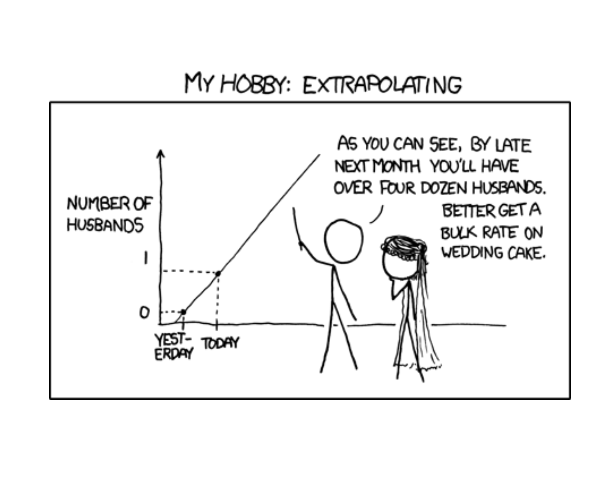
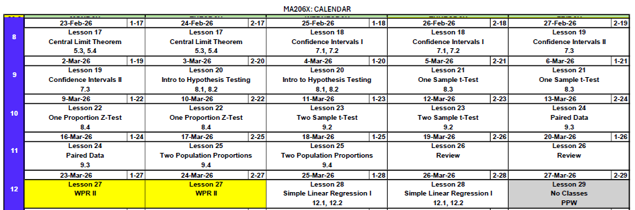
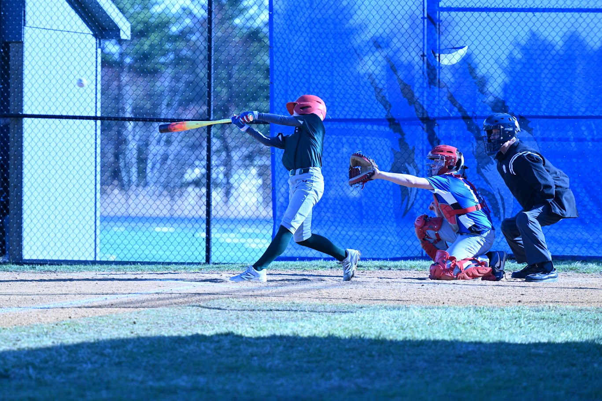
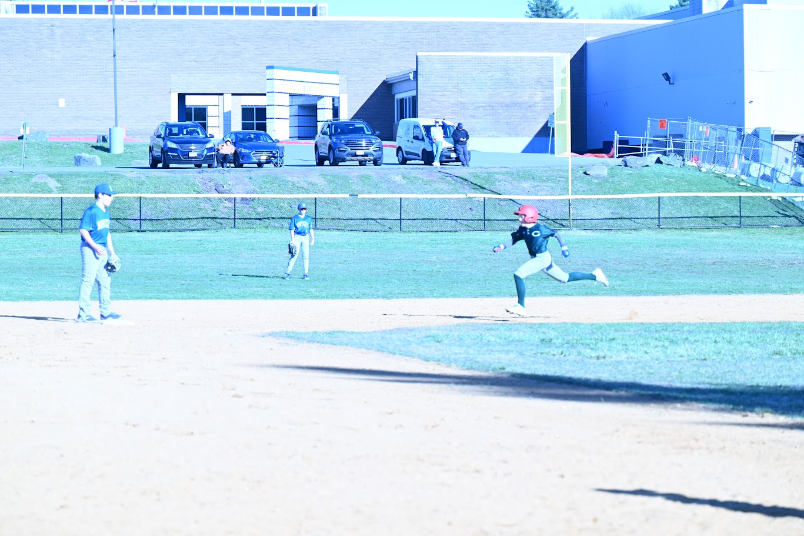
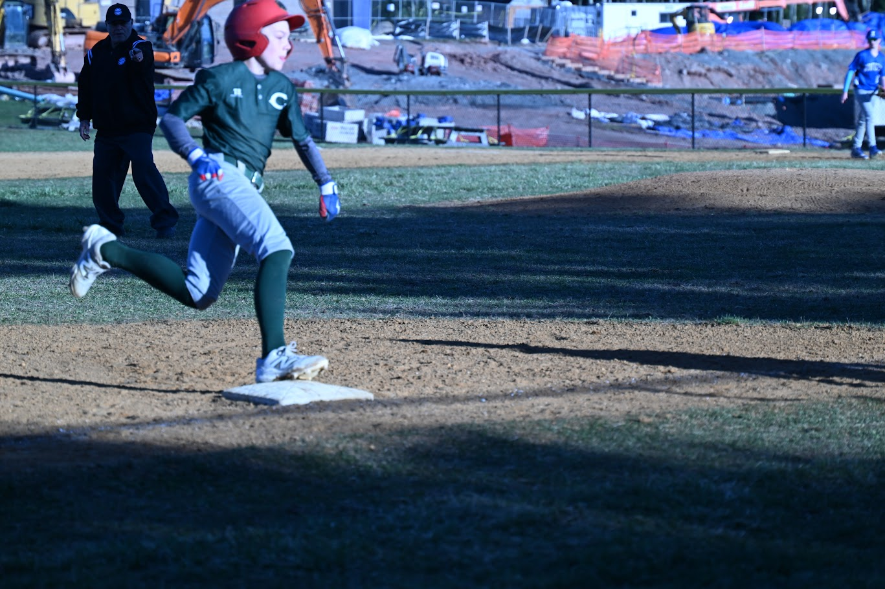
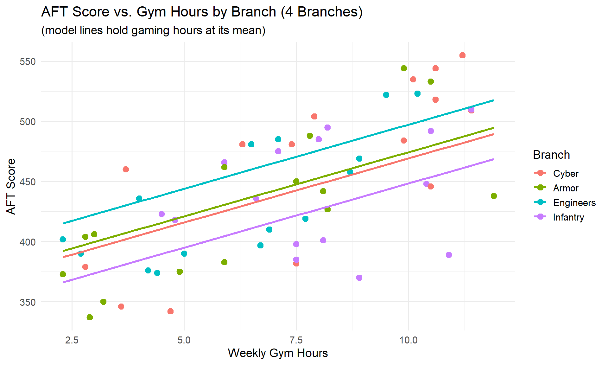
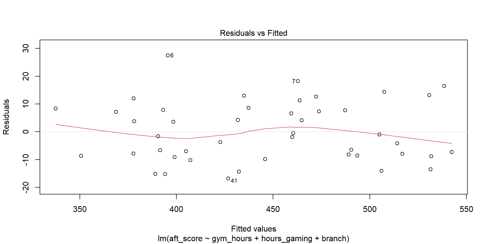
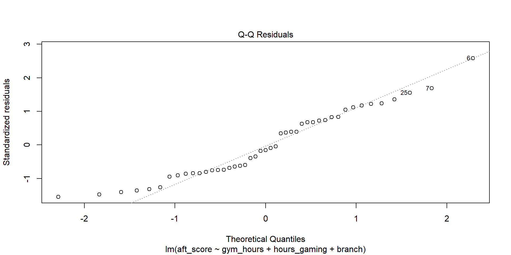
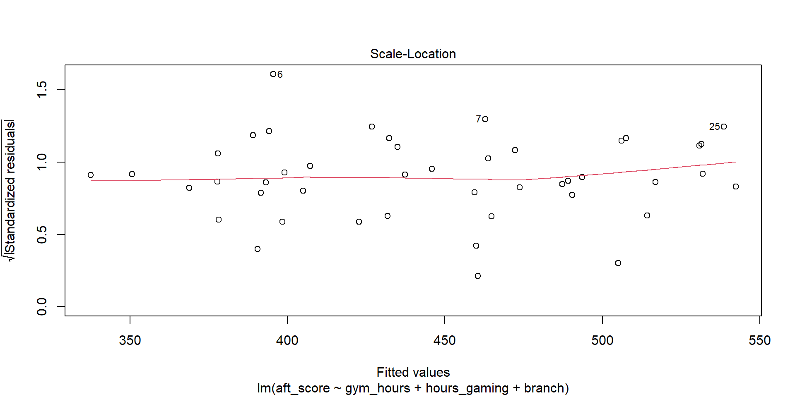

Lesson 31: Multiple Linear Regression I

Cal



What We Did: Lessons 28 & 30
NoteLesson 28: Simple Linear Regression I
- Scatterplots describe direction, form, strength, and unusual features
- Least squares regression fits \(\hat{y} = b_0 + b_1 x\) by minimizing \(\sum(y_i - \hat{y}_i)^2\)
- Slope \(b_1\): predicted change in \(y\) for a 1-unit increase in \(x\) (interpret in context!)
- Intercept \(b_0\): predicted \(y\) when \(x = 0\) (may not be meaningful)
- Residuals: \(e_i = y_i - \hat{y}_i\)
- Extrapolation is dangerous – don’t predict outside the data range
NoteLesson 30: Simple Linear Regression II
- Read the regression output: equation, p-values, and \(R^2\)
- Test the slope with \(t = b_1 / SE(b_1)\) to determine if \(x\) is a useful predictor
- \(R^2\) measures the fraction of variability in \(y\) explained by the model
- Multiple regression: \(\hat{y} = b_0 + b_1 x_1 + b_2 x_2 + \cdots\) – interpret each slope holding other variables constant
- Categorical predictors use indicator (dummy) variables with a reference level
Review: Lesson 30 (SLR II)
Where We Left Off
Last class, we built up from a simple model to one with categorical predictors. Here’s the final model we ended with – predicting AFT scores using gym hours, gaming hours, and branch (Cyber, Engineers, Infantry):
model_cat <- lm(aft_score ~ gym_hours + hours_gaming + branch, data = soldiers)
summary(model_cat)
Call:
lm(formula = aft_score ~ gym_hours + hours_gaming + branch, data = soldiers)
Residuals:
Min 1Q Median 3Q Max
-16.821 -8.555 -1.591 7.885 27.441
Coefficients:
Estimate Std. Error t value Pr(>|t|)
(Intercept) 435.2475 6.9776 62.378 < 2e-16 ***
gym_hours 10.5989 0.6934 15.284 < 2e-16 ***
hours_gaming -7.0000 0.2888 -24.236 < 2e-16 ***
branchEngineers 27.6409 4.4745 6.177 2.66e-07 ***
branchInfantry -20.8838 4.1198 -5.069 9.50e-06 ***
---
Signif. codes: 0 '***' 0.001 '**' 0.01 '*' 0.05 '.' 0.1 ' ' 1
Residual standard error: 11.26 on 40 degrees of freedom
Multiple R-squared: 0.9646, Adjusted R-squared: 0.9611
F-statistic: 272.5 on 4 and 40 DF, p-value: < 2.2e-16
All three branch levels (Cyber, Engineers, Infantry) were significant – each had a meaningfully different intercept.
What We’re Doing: Lesson 31
Objectives
- Interpret coefficients in multiple regression carefully
- Assess multicollinearity and variable importance
- Use adjusted \(R^2\) and diagnostics for model selection
- Understand threats to causal inference
Required Reading
Supplement: Causality
Break!
Reese
The Takeaway for Today
ImportantToday’s Key Ideas
- Not every category matters – an insignificant level means that group isn’t different from the baseline
- LINE assumptions must hold for regression inference to be valid
- Check assumptions with residual plots and QQ plots
What If Some Factor Levels Are Significant and Others Aren’t?
Suppose we had data on a fourth branch – 15 Armor Soldiers. Let’s see what happens when we add them and refit:
rbind(head(soldiers_expanded, 3), tail(soldiers_expanded, 3)) gym_hours hours_gaming gpa branch aft_score
1 10.6 2.3 2.80 Cyber 518
2 6.7 18.1 3.35 Engineers 397
3 10.5 2.8 3.41 Infantry 492
58 2.3 12.4 3.48 Armor 373
59 11.9 16.6 2.95 Armor 438
60 3.0 9.2 2.72 Armor 406model_4branch <- lm(aft_score ~ gym_hours + hours_gaming + branch, data = soldiers_expanded)
summary(model_4branch)
Call:
lm(formula = aft_score ~ gym_hours + hours_gaming + branch, data = soldiers_expanded)
Residuals:
Min 1Q Median 3Q Max
-18.520 -8.529 -1.208 8.040 27.714
Coefficients:
Estimate Std. Error t value Pr(>|t|)
(Intercept) 435.2274 5.9444 73.216 < 2e-16 ***
gym_hours 10.6604 0.5571 19.134 < 2e-16 ***
hours_gaming -7.0599 0.2507 -28.158 < 2e-16 ***
branchArmor 5.1596 4.1419 1.246 0.218
branchEngineers 28.0794 4.2619 6.588 1.92e-08 ***
branchInfantry -20.8446 4.0037 -5.206 3.07e-06 ***
---
Signif. codes: 0 '***' 0.001 '**' 0.01 '*' 0.05 '.' 0.1 ' ' 1
Residual standard error: 10.95 on 54 degrees of freedom
Multiple R-squared: 0.9677, Adjusted R-squared: 0.9648
F-statistic: 324 on 5 and 54 DF, p-value: < 2.2e-16Reading This Output
Look at branchArmor: the coefficient is 5.16 with a p-value of 0.2183.
- Engineers and Infantry are still significant – they are meaningfully different from Cyber
- Armor is not significant – we fail to reject \(H_0: \beta_{\text{Armor}} = 0\)
This means Armor Soldiers perform about the same as Cyber Soldiers on the AFT, after controlling for gym hours and gaming hours. There’s no evidence of a difference.

Notice the Armor and Cyber lines nearly overlap – visually confirming there’s no meaningful difference between them.
NoteWhat Should We Do?
When a categorical level is not significant, you have options:
- Keep it – if there’s a theoretical reason to distinguish the groups
- Combine it with the reference level (e.g., merge Armor and Cyber into one group)
- Remove those observations – only if the group isn’t relevant to your research question
In practice, an insignificant level usually just means “this group behaves like the baseline.”
Regression Assumptions: LINE
We’ve been fitting models and reading output – but when are the results actually trustworthy?
Just like every hypothesis test we’ve done this semester, regression has assumptions that must be satisfied for the inference to be valid. Remember:
- For a one-sample t-test, we needed \(n > 30\) (or a nearly normal population)
- For a one-proportion z-test, we needed \(np \geq 10\) and \(n(1-p) \geq 10\)
Regression is no different – it has its own set of assumptions. They’re a bit more involved, but the idea is the same: if the assumptions don’t hold, the p-values and confidence intervals can’t be trusted. Remember them with LINE:
ImportantLINE Assumptions
| Letter | Assumption | What It Means |
|---|---|---|
| L | Linearity | The relationship between each predictor and \(y\) is linear |
| I | Independence | The observations are independent of each other |
| N | Normality | The residuals are normally distributed |
| E | Equal Variance | The residuals have constant spread (homoscedasticity) |
Let’s check each one using our model from Lesson 30:
model <- lm(aft_score ~ gym_hours + hours_gaming + branch, data = soldiers)L – Linearity
The relationship between each predictor and \(y\) should be linear (not curved). We check this with a residuals vs. fitted values plot:
plot(model, which = 1)
What to look for: The red line should be roughly flat and near zero. If it curves, the linear assumption is violated.
TipVerdict
The red line is approximately flat – linearity looks reasonable.
I – Independence
Observations should not influence each other. This is about study design, not something we can see in a plot.
NoteWhen Is Independence Violated?
- Time series data – today’s value depends on yesterday’s
- Clustered data – Soldiers in the same platoon may be more similar
- Repeated measures – multiple observations on the same person
Our data has one observation per Soldier with no time or group structure, so independence is reasonable.
N – Normality of Residuals
Every observation has a residual: \(e_i = y_i - \hat{y}_i\). If we collect all of those residuals and make a histogram, they should look roughly bell-shaped – centered at zero with most values close to zero and fewer values far away. In other words, the model’s errors should follow a normal distribution. This matters because the p-values and confidence intervals from regression assume normally distributed errors.
We check this with a QQ plot (quantile-quantile plot), which plots the residuals against what we’d expect if they were perfectly normal:
plot(model, which = 2)
What to look for: Points should fall close to the diagonal line. Systematic departures (S-curves, heavy tails) indicate non-normality.
TipVerdict
Points follow the line closely – normality looks good.
NoteHow Much Does Normality Matter?
With large samples (\(n > 30\)), the Central Limit Theorem makes regression robust to mild non-normality. Severe skewness or heavy tails are more concerning with small samples.
E – Equal Variance (Homoscedasticity)
The spread of residuals should be constant across all fitted values – no fanning out or funneling in. We check with the scale-location plot:
plot(model, which = 3)
What to look for: The red line should be roughly flat. A funnel shape (spread increasing with fitted values) means unequal variance.
TipVerdict
The red line is approximately flat and the spread is fairly constant – equal variance looks reasonable.
LINE Summary for Our Model
| Assumption | Method | Verdict |
|---|---|---|
| Linearity | Residuals vs. Fitted | Flat red line – OK |
| Independence | Study design | One obs per Soldier – OK |
| Normality | QQ Plot | Points on the line – OK |
| Equal Variance | Scale-Location | Constant spread – OK |
Our model passes all four checks. The p-values and confidence intervals from summary() are trustworthy.
WarningWhat If Assumptions Fail?
- Non-linearity: Try transforming \(x\) or \(y\) (e.g., log, square root), or add polynomial terms
- Non-independence: Use specialized methods (mixed models, time series models)
- Non-normality: Often OK with large \(n\); otherwise try transformations
- Unequal variance: Try transforming \(y\), or use robust standard errors
Project: Brigade Lethality Analysis
The rest of today is project work time. Open your Vantage workspace and start applying what you’ve learned.
Before You Leave
Today
- An insignificant categorical level means that group isn’t different from the baseline
- LINE – Linearity, Independence, Normality, Equal Variance
- Check assumptions with diagnostic plots before trusting p-values
Any questions?
Next Lesson
Lesson 32: Multiple Linear Regression II
- Categorical predictors (indicator/dummy variables)
- Confounding variables in practice
- Controlling for confounders in regression models
Upcoming Graded Events
- Tech Report – Due Lesson 36